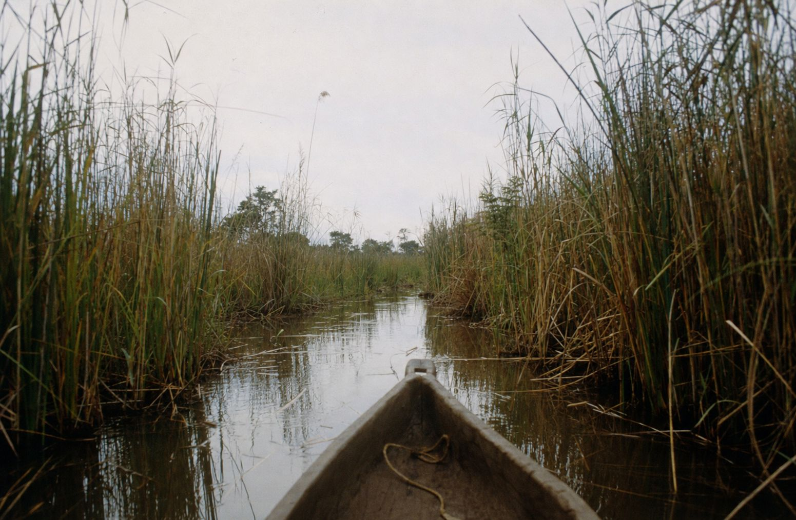
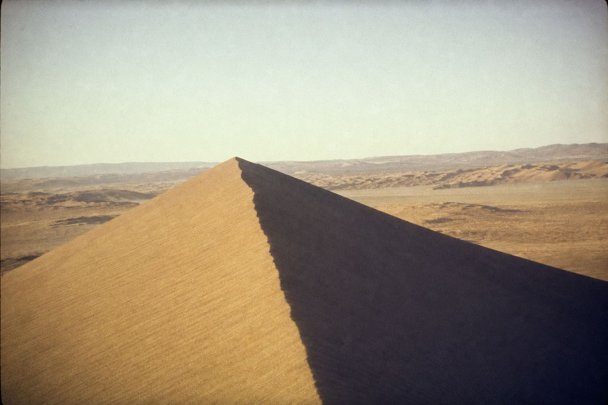
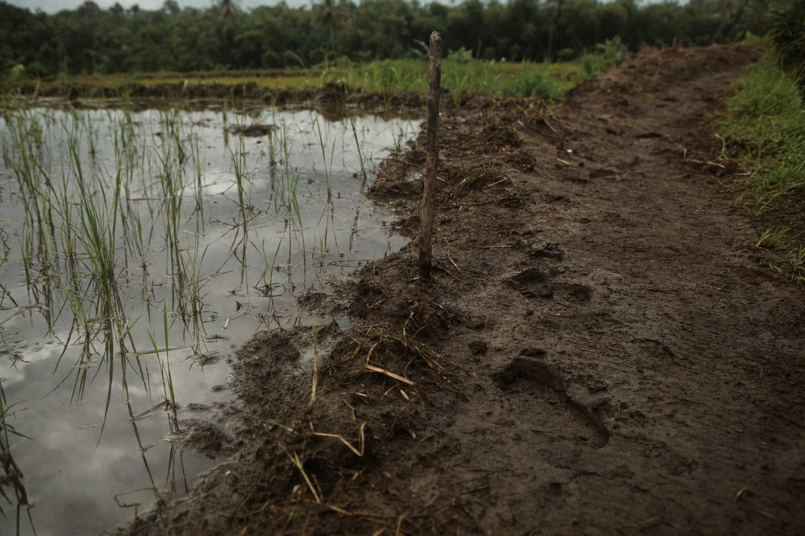
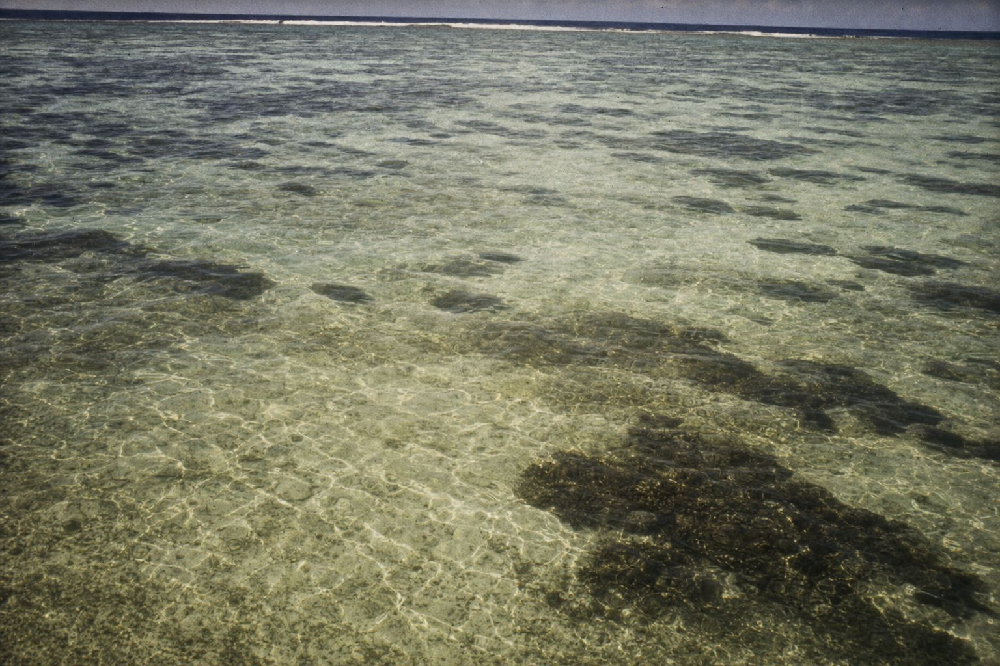

The edge of the pool, the end of the day
James Wild Stays
The places themselves. Five hundred and forty-five of them, across fourteen regions, each one visited or vetted before it was written about. This is the standing collection — kept current, and kept honest.
Why this exists
Built for advisors, not for browsingA brochure description and the room a client actually receives are often two different rooms. Wild Earth Stays exists to close that gap before the booking, not apologise for it after.
Every advisor who sends a client somewhere is lending that client their own judgement. What we hand back is not a photograph. It is a transfer time we timed ourselves, a minimum stay we confirmed, a room count that matches what is actually built.
Behind the collection sits a live rate and consortium feed — the same figures a reservations desk works from, not a brochure refreshed once a year. An advisor working from the ledger is working from what we would tell a client ourselves.
The result is a stay an advisor can put their name behind, and a client who arrives to what they were actually told to expect.
“A good room is one you stop noticing by the second morning. A great one, you are still describing to strangers at dinner a year later. We only keep the second kind.”
From the ledger
One line, inked| Nº | Ledger ID | Entry | Description | Where | James’s mark |
|---|---|---|---|---|---|
| 171 | STY-2026-000171 | Monwanathe 3rd night is the one | Big Five luxury in wild Thornybush | Thornybush · Greater Kruger · South Africa | I Know a PlaceMay 2026 |
“If I haven’t slept in it, I’ll tell you. If I have, I’ll tell you more.”
“Two nights is a visit. Three is when the place starts talking back.”
“If it’s on your feed, it isn’t hidden. If it is, I’m not posting it.”
What sits behind the collection
The working libraryThe front of this is a collection. The back of it is a live property library that we maintain ourselves rather than licence from anyone.
Most collections are a page of photographs and a contact form. This one is a database we work in every day.
- Properties
- 545 recorded, held with coordinates, nearest airstrip, real transfer times, unit counts, minimum stays and child policies.
- Stays
- 456 individual room and suite records — not property-level guesswork, the actual room types.
- Rates
- 3,045 rate observations against 66 rate codes. The most recent batch was verified on 26 August 2026.
- Media
- 1,386 catalogued images and 997 assets, with the ones we shot ourselves marked as such.
- Houses
- 19 partner accounts and 51 named contacts. Contracted, not aggregated.
- Audit
- 402 change-log entries on the library. Every edit is attributable.
Where the collection is
By regionAfrica
93 entries
South Africa · Tanzania · Botswana · Kenya · Zambia · Namibia · Rwanda · Zimbabwe · Madagascar
South-East Asia
10 entries
Indonesia — Bali, Ubud, Sanur, Jimbaran
The Pacific
8 entries
French Polynesia — Society Islands, Tuamotus, Marquesas · Maldives
Central America
8 entries
Costa Rica · Panama · Nicaragua · Guatemala
Europe & the Arctic
5 entries
Ireland · Greenland and the high Arctic · United States
On the map: Southern Africa
Positions approximate- MonwanaThornybush, Greater Kruger · 2026
- Kirkman's KampSabi Sand, Greater Kruger · 2026
- Lion Sands Ivory LodgeSabi Sand, Greater Kruger · 2026
- Jaci's LodgesMadikwe · 2026 · met the host
- Tswalu KalahariKalahari · 2012
- Ellerman HouseBantry Bay, Cape Town · 2026
- Leeu EstatesFranschhoek · 2026
- DumaTauLinyanti, Botswana · 2026
- MomboChief’s Island, Okavango Delta, Botswana · 2026
- QorokweOkavango Delta, Botswana · 2026
- TongabeziZambezi River, Zambia · 2012
Explore by region
Ten maps · every country · the stays James knows


What kind of places
By category| Category | Entries | Note |
|---|---|---|
| Camp | 24 | Canvas, mobile and semi-permanent. Mostly Africa, mostly seasonal. |
| Lodge | 14 | Built structures inside reserves and parks. |
| Private house | 14 | Whole-house exclusive use, staffed. |
| Resort | 10 | Island and coastal. Smallest is six units. |
| Hotel | 8 | Town and vineyard properties, used as bookends. |
| Vessel | 2 | Expedition ships. Arctic and Indonesian waters. |
| Villa | 1 | Single-property exclusive use. |
The ledger extract
Names withheld until enquiryTwenty entries, unnamed. Everything else is exactly as it is held in the library — including the transfer times, which are the ones we timed rather than the ones we were told.
| Entry | Place | Type | Units | Access | Min. age |
|---|---|---|---|---|---|
| 001 | Puerto Viejo · south Caribbean coast · Playa Chiquita / Punta Cocles · Costa Rica | Hotel | 6 | Approx. 35-minute domestic flight to area | 3 |
| 002 | Las Isletas, Lake Nicaragua · Nicaragua | Lodge | 9 | 60-minute drive then 15-minute boat ride | 8 |
| 003 | Limpopo Province · Thornybush Nature Reserve · South Africa | Lodge | 6 | 45 minutes | 10 |
| 004 | Limpopo · Waterberg · Marakele National Park · South Africa | Lodge | 5 | 90 min transfer | 16 |
| 005 | Mpumalanga Province · Sabi Sand Nature Reserve & Kruger National Park · South Africa | Lodge | 18 | 5–20 min complimentary road transfer | 10 |
| 006 | Western Cape · Kloof Street neighbourhood, Cape Town · South Africa | Hotel | 29 | 20–30 min | 10 |
| 007 | Society Islands, Taha’a · private motu · French Polynesia | Resort | 59 | 35-minute private shuttle boat | All ages |
| 008 | Lake Petén Itzá, Petén · Guatemala | Hotel | 15 | 20-minute drive then ~15-minute boat transfer | All ages |
| 009 | Limpopo Province · Waterberg · Marakele National Park · South Africa | Camp | 15 | 1 hour road transfer | All ages |
| 010 | Limpopo · Waterberg · Marakele National Park · South Africa | Villa | 4 | 40 min | All ages |
| 011 | Mpumalanga · Kruger National Park · South Africa | Lodge | 9 | — | 16 |
| 012 | Mpumalanga · Kruger National Park · South Africa | Lodge | 9 | — | 6 |
| 013 | Mpumalanga · Sabi Sand Nature Reserve · South Africa | Lodge | 8 | — | 10 |
| 014 | Monteverde, Puntarenas Province · Tilarán Mountains · Costa Rica | Hotel | — | 2.5-hour drive | All ages |
| 015 | Uvita de Osa, Puntarenas · South Pacific / Costa Ballena · Costa Rica | Hotel | 8 | — | 18 |
| 016 | Marquesas Islands, Nuku Hiva · French Polynesia | Lodge | 20 | — | All ages |
| 017 | Society Islands, Bora Bora · Motu Tevairoa · French Polynesia | Resort | — | 10-minute boat ride | All ages |
| 018 | Society Islands, Taha’a lagoon · Motu Tuvahine · French Polynesia | Private house | 9 | — | 10 |
| 019 | Isla Palenque, Gulf of Chiriquí · San Lorenzo, Chiriquí Province · Panama | Resort | — | 15-minute boat crossing | All ages |
| 020 | Franschhoek, Western Cape · South Africa | Hotel | 13 | — | 18 |
How entries are classified
Five marks- Founder collection
- Places J.W. has returned to more than three times. The core of the ledger.
- Heritage entry
- In the ledger for twenty years or more and still standing up.
- Founder favourite
- A personal call, marked as such so you know it is one.
- Under observation
- Visited once. Promising. Not yet entered.
- Special interest
- In for one specific reason — a guide, a season, a single room.
From the archive
Recorded in person



The video library
Recorded, not just writtenNine field videos, one channel, fifteen thousand views since October 2025. Small by design — we would rather post nine honest ones than ninety padded ones.
The channel is organised the same way the ledger is — by what the footage is actually for, not for algorithmic reach.
- Brand and philosophy
- This is Wild Earth Stays · Beyond the Horizon: The Wild Earth Stays Philosophy
- Purpose and conservation
- Africa's Newest Rewilding Success Story, Magashi Peninsula · The More Collection: Safaris That Give Back · Lalibela Wildlife Reserve
- My Epic Africa safari guide
- First Time African Safari Guide · My Epic Africa
- Stays by setting
- Stays by Land · Stays by Water
The right room is half the story. The other half is what is waiting outside it at dawn.